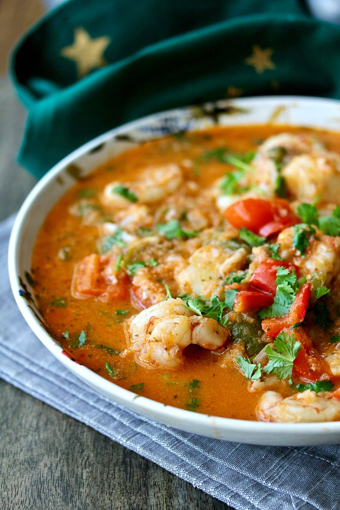

Moqueca

Description
Moqueca (mo-ke-ka) is a slow cooked Brazilian seafood stew. Moqueca can be made with shrimp or fish
as a base with tomatoes, onions, garlic, lime and coriander which is served with white rice. However,
please don't forget to add coconut milk in order to give moqueca is signature sweet and creamy taste.
Ingredients
- White Fish
- Onion
- Carrots
- Red Bell Pepper
- Garlic
- Chili Peppers
- Tomato Paste
- Spices
- Fish or Chicken Stock
- Tomatoes
- Coconut Milk
- Palm Oil
- Lime
Instructions
- Season your white fish any way you like.
- In a large sauce pan head oil over med-high. Add onion and salt and saute' for 3 minutes.
- Turn heat down to medium, add carrots, bell peppers, garlic and cook for 5 minutes.
- Add tomatoes and tomato paste. Mix and bring to simmer. Cover and leave on low for 5 minutes.
- Add coconut milk and cook for 5 minutes longer or until thickened.
- Spoon over white rice.